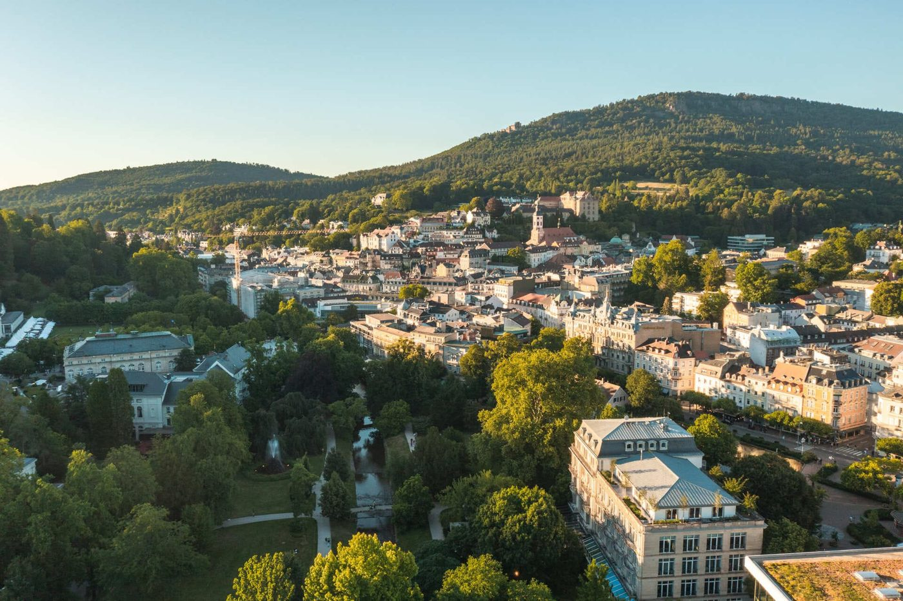
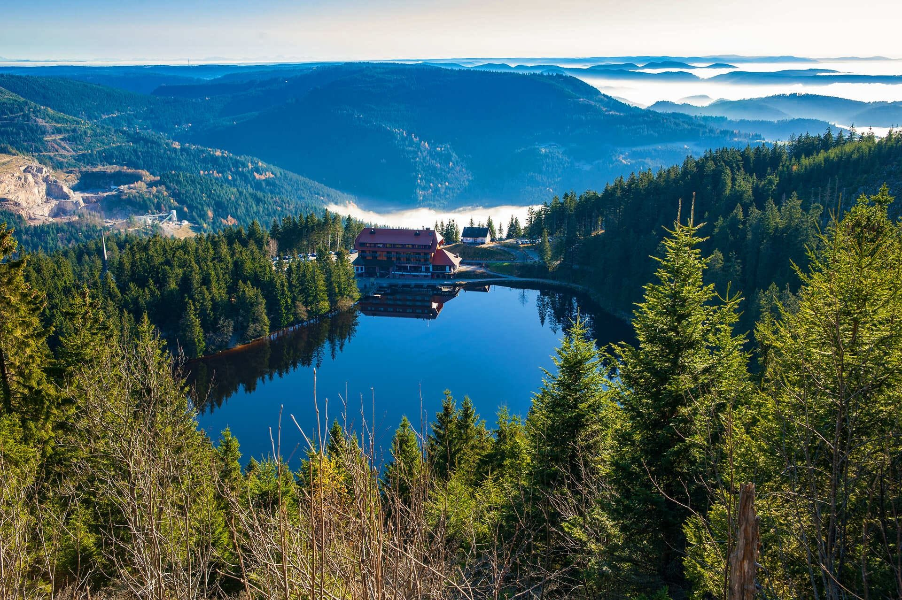
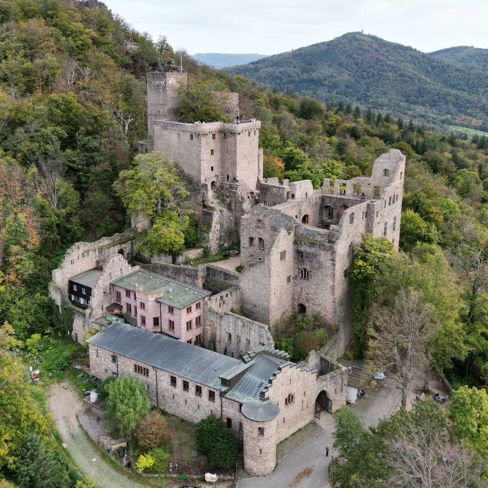

Baden-Baden
A spa town since the Romans, dressed up in the 1800s and never changed back. Casino, colonnades and a river park, all inside a ten-minute walk.

Alexia, pack a swimsuit.
Black Forest · Thermal Waters · Medieval & Luxurious Baden · 6–8 November 2026
A former monastery with its own thermal pools, inside and outside. Tap a photo.

A spa town since the Romans, dressed up in the 1800s and never changed back. Casino, colonnades and a river park, all inside a ten-minute walk.
It starts where the streets end. Fir ridges, fog in the valleys, and a 1913 funicular to a summit at 668 m.

Castle ruins from 1102 above the town. A waterfall in a mossy valley. Caracalla and the 1877 Friedrichsbad for more water. The Kurhaus casino for one dressed-up evening.
We walk out of the hotel and into the forest. No car. Castle ruins, cliffs, a summit at sunset.
The casino colonnade. We set off after breakfast, up through the old town.
The margraves’ later palace. We pass its walls and leave the streets behind.
Castle ruins from 1102. The first seat of the margraves of Baden. We climb the tower for the view over the Rhine valley. Free.
A wall of rock towers above the town. The Ritterplatte viewpoint at 488 m is the highest point on foot and the best spot for photos.
A wooded gorge with places to eat. Lunch.
The Devil’s Pulpit. A rock ledge looking back over the valley.
End of the walk. From here the 1913 funicular does the climbing.
Baden-Baden’s own mountain. Tower, the whole Rhine plain, sunset around 17:00. Then funicular and bus back to the pool.
5 h 18 min. Arrives 14:01.
8 min. Miss it and the next train is 30 minutes behind.
19 min. Arrives 14:28.
About 15 min. Leaves every 12–15 minutes.
Check-in opens at 15:00. Swimsuit, pool.
Bags can wait at reception.
About 15 min. Leaves every 12–15 minutes.
About 19 min.
Onto ICE 370 to Berlin.
Home.
Hotel and transport only. Food and extra sights come on top.
ICE 371 leaves at 08:43. The next direct one is two hours later. A flexible ticket is valid on it. A saver ticket is tied to one train, so we leave home early.
If we would arrive 20 minutes or more late, we may take any other train on the route. 60 minutes late means 25% of the fare back, 120 minutes means 50%.
Trains to Baden-Baden leave about every 30 minutes and take 15 to 30 minutes. We arrive half an hour later, still in time for the pool.
The next direct ICE from Karlsruhe to Berlin leaves two hours later. If a late regional train caused it, our ticket is valid on that one.
The next 201 comes in 12 to 15 minutes, until around midnight. Taxis wait outside the station. It is 7 km to the centre.
Light rain: we walk to the castle ruins and back, about 7 km, and skip the rest. Heavy rain: spa day. Caracalla is open 08:00–22:00 and thermal pools are better in the rain.
We check the summit webcam at breakfast. No view means no funicular: we end the walk at the valley station and take the bus back. The funicular normally runs 10:00–22:00.
We can turn around at the castle or the Battert and walk back down, 3.5 to 4.3 km, all downhill. The second half after lunch is the easy part.
Its domed pool has been under renovation this year. If it still is, we skip it. Caracalla is next door and uses the same water.
Swimsuit in the hotel pools and the Caracalla pools. Caracalla's sauna level is textile-free. Friedrichsbad is textile-free except Wednesday and Saturday.
Thermal water is hot. We drink water and take a break every 20 minutes. Reception is staffed all night.
Swimsuit, flip-flops, shoes with grip, a warm layer for the summit, a rain jacket, one nice outfit, ID.